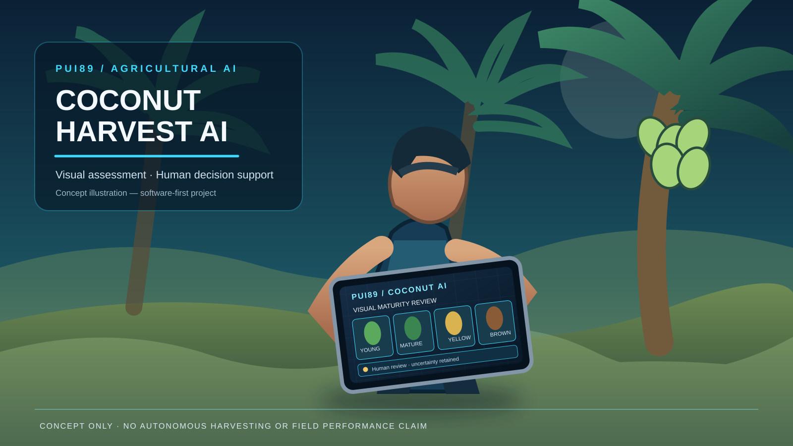
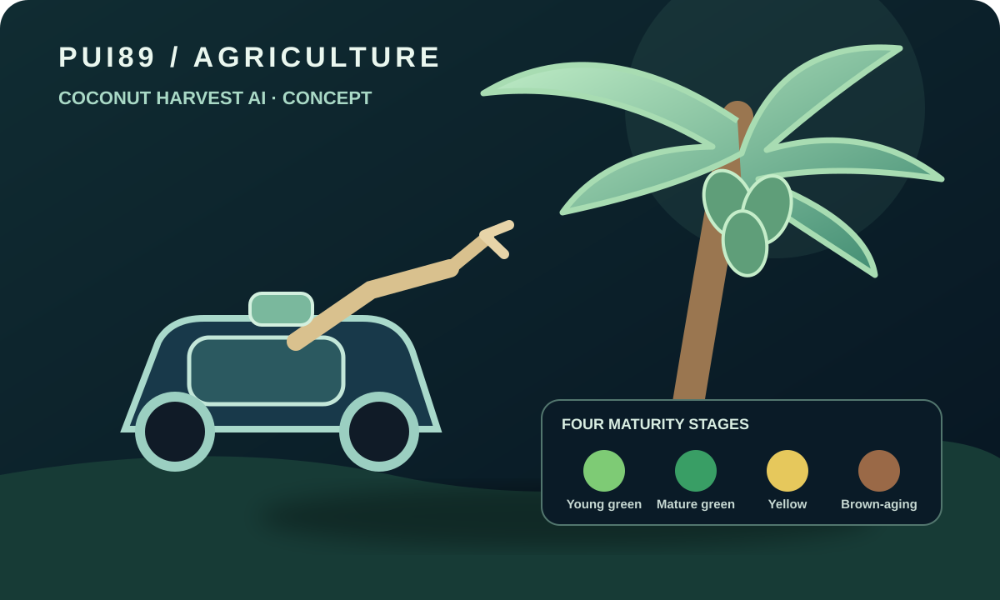

แอปพลิเคชัน AI ตรวจภาพ
ช่วยผู้ปฏิบัติงานตรวจภาพสวน กลุ่มทะลายและลักษณะภายนอกของมะพร้าว พร้อมตรวจคุณภาพภาพและแสดงความไม่แน่นอน
- รับและตรวจภาพ
- หมวดระยะความแก่ 4 กลุ่ม
- การประเมินเพื่อวางแผนโดยมนุษย์ตรวจทาน
แอปพลิเคชัน AI ที่อยู่ระหว่างพัฒนาสำหรับประเมินระยะมะพร้าว ควบคู่กับแนวคิดหุ่นยนต์เก็บเกี่ยวที่ให้ความสำคัญกับความปลอดภัยและการตัดสินใจบนพื้นฐานของหลักฐาน

ภาพรวมผลิตภัณฑ์ · คู่มือภาพ
Coconut Harvest AI มีแนวทางพัฒนา 2 ส่วนที่เชื่อมโยงกัน ได้แก่ แอปพลิเคชัน AI สำหรับตรวจภาพและช่วยประเมินการเก็บเกี่ยว และแนวคิดหุ่นยนต์เก็บเกี่ยวภายใต้การกำกับดูแลของมนุษย์ ภาพด้านล่างสื่อถึงทิศทางการออกแบบ ไม่ใช่ภาพถ่ายของเครื่องที่ทำงานได้จริง

ช่วยผู้ปฏิบัติงานตรวจภาพสวน กลุ่มทะลายและลักษณะภายนอกของมะพร้าว พร้อมตรวจคุณภาพภาพและแสดงความไม่แน่นอน
แนวคิดเครื่องจักรในอนาคตสำหรับช่วยงานเก็บเกี่ยวภายใต้การกำกับดูแล หลังผ่านการตรวจสอบกลไกและความปลอดภัยแยกต่างหาก
ผู้ควบคุมยังคงเป็นผู้รับผิดชอบการตัดสินใจเก็บเกี่ยวที่มีผลสำคัญ ผลลัพธ์จาก AI เพียงอย่างเดียวต้องไม่สั่งตัดหรือเคลื่อนที่ที่มีความเสี่ยง
คู่มือภาพด้านการเกษตร
ชื่อหมวดเหล่านี้เป็นป้ายกำกับที่เสนอสำหรับตรวจสอบชุดข้อมูลและทบทวนโดยผู้เชี่ยวชาญ ยังไม่ใช่คลาสของโมเดลที่ผ่านการยืนยัน พันธุ์มะพร้าว วัตถุประสงค์การใช้ แสง และสภาพสวนอาจส่งผลต่อลักษณะที่มองเห็น
หลักฐานที่ต้องมี: ภาพสวนจริงที่มีสิทธิใช้งานและตรวจสอบแหล่งที่มาได้ ป้ายกำกับที่มนุษย์ทบทวน และชุดข้อมูลทดสอบที่แยกไว้ก่อนรายงานประสิทธิภาพโมเดล
ซอฟต์แวร์ · ลำดับการทำงาน
แผนภาพนี้อธิบายลำดับการประมวลผลที่วางแผนไว้ ไม่ใช่หน้าจอระบบตรวจจับแบบเรียลไทม์ และไม่ได้ยืนยันว่าทุกขั้นตอนพัฒนาเสร็จแล้ว

ตรวจสอบแหล่งที่มาของภาพ ความละเอียด ภาพเบลอ แสง การบัง และความชัดเจนของผลมะพร้าว
โมเดล Computer Vision ในอนาคตอาจประเมินหมวดจากลักษณะที่มองเห็น หากหลักฐานไม่เพียงพอหรือขัดแย้งกัน ต้องปฏิเสธหรือแจ้งให้ตรวจทาน
แสดงหลักฐานและความไม่แน่นอนให้ผู้ควบคุมตรวจทาน บันทึกการแก้ไข และจัดทำผลประเมินที่ตรวจสอบย้อนหลังได้ โดยไม่มีการอนุมัติให้ตัดอัตโนมัติ
วิศวกรรม · สถาปัตยกรรมที่เสนอ
สถานะปัจจุบัน: รายการเหล่านี้เป็นองค์ประกอบในการออกแบบ ไม่ใช่การยืนยันว่าหุ่นยนต์สมบูรณ์ถูกสร้างแล้ว ระยะเอื้อม น้ำหนักบรรทุก ความมั่นคง การตัด การรวบรวมผล การทนสภาพอากาศ และความปลอดภัยต้องผ่านการทดสอบเป็นขั้นตอน
การพัฒนา · สถานะหลักฐาน
มีภาพแนวคิด แผนภาพลำดับการทำงาน ข้อกำหนดโครงการ และหมวดระยะความแก่มะพร้าวที่เสนออยู่ในหน้านี้และเอกสารโครงการ
ยังไม่มีการแสดงระบบตรวจจับสดที่ผ่านการยืนยัน ความแม่นยำภาคสนาม การทำงานของหุ่นยนต์เต็มระบบ การตัดอัตโนมัติ หรือผลการเก็บเกี่ยวในสวนที่ตรวจสอบได้
ยืนยันสิทธิภาพ จัดทำป้ายกำกับที่ผ่านการทบทวน ประเมิน Precision, Recall และ F1 แยกตามคลาสบนชุดทดสอบ จากนั้นจึงศึกษาการจำลองและทดสอบความปลอดภัยในสภาพควบคุม
ซอฟต์แวร์พื้นฐานและเครื่องมือประเมินยังอยู่ระหว่างพัฒนา การแบ่งระยะเป็นกรอบแนวคิดที่กำลังศึกษา ยังไม่มีการยืนยันความแม่นยำของโมเดล การเก็บเกี่ยวภาคสนาม ระยะเอื้อมของหุ่นยนต์ หรือความปลอดภัยของเครื่องจริง
ความแก่ พันธุ์ แสง สิ่งบดบัง และสภาพสวนทำให้การประเมินอย่างสม่ำเสมอเป็นเรื่องยาก
ต้นปาล์มสูงและการเก็บเกี่ยวด้วยแรงงานมีความเสี่ยงด้านการเข้าถึงและผลผลิตตกหล่น ซึ่งต้องออกแบบอย่างรอบคอบ
เกษตรกรควรเห็นคำแนะนำ ระดับความไม่แน่นอน และเหตุผลประกอบการแจ้งเตือน
รับภาพ → ตรวจคุณภาพและที่มา → ประเมินระยะในอนาคต → แสดงความไม่แน่นอนและให้มนุษย์ตรวจทาน → บันทึกหลักฐาน โดยมี 4 ระยะที่กำลังศึกษา: มะพร้าวอ่อน มะพร้าวเขียวแก่ มะพร้าวสีเหลือง และมะพร้าวแก่สีน้ำตาล ทั้งนี้ต้องให้ผู้เชี่ยวชาญด้านพืชสวนทบทวนเกณฑ์แบ่งระยะและประเมินผลจริง
แนวคิดแขนเก็บเกี่ยวจะเข้าหา จับ และตัดทะลายมะพร้าว โดยเลือกวิธีรองรับผลผลิตได้ 2 แบบ ได้แก่ ตะกร้าเก็บผลผลิตแบบถอดได้ หรือการปล่อยผลผลิตลงในพื้นที่ที่ประเมินแล้วว่าปลอดภัยและมีเขตกั้น ทั้งแขน ใบมีด ตะกร้า กลไกควบคุมการปล่อย และระบบล็อกเพื่อความปลอดภัยยังเป็นข้อเสนอด้านการออกแบบ ไม่ใช่ฮาร์ดแวร์ที่สร้างหรือทดสอบแล้ว
โครงการยังอยู่ระหว่างพัฒนา ไม่ใช่ผลิตภัณฑ์สำเร็จรูป
ผู้เชี่ยวชาญต้องพิจารณามาตรฐาน กฎหมาย และข้อกำหนดสถานที่ใช้งานที่เกี่ยวข้อง การอ้างอิงมาตรฐานไม่ได้หมายความว่า PUI89 ได้รับการรับรองหรือปฏิบัติตามแล้ว
เกษตรกร นักวิจัย วิศวกรคอมพิวเตอร์วิทัศน์ และผู้เชี่ยวชาญหุ่นยนต์สามารถร่วมทบทวนความต้องการ คุณภาพข้อมูล และเป้าหมายการทดสอบที่ปลอดภัย
ร่วมสนับสนุนหรือให้ข้อเสนอแนะเปิดคลังโครงการบน GitHub ↗สแกนเพื่อเปิดหน้าเว็บไซต์โครงการภาษาไทยนี้โดยตรง เป็นภาพ QR Code แบบคงที่ที่โฮสต์บนเว็บไซต์ PUI89 ไม่ใช้บริการเปลี่ยนเส้นทางหรือบริการ QR แบบเสียเงิน
ชั้นปัญญาประดิษฐ์สำหรับผู้ปฏิบัติงานในสวน โมเดลภาษาใช้สื่อสารและอธิบายผล ส่วนการให้เหตุผลของงานต้องอ้างอิงหลักฐานภาพ กฎที่กำหนด และความไม่แน่นอน
ถาม–ตอบเรื่องสวน อธิบายระยะความแก่ของมะพร้าวทั้ง 4 ระยะด้วยภาษาที่เข้าใจง่าย และสรุปบันทึกการตรวจ โดยแยกผลสังเกตจริงออกจากคำแนะนำทั่วไป
ผสานผลตรวจจับผลมะพร้าว การประเมินความแก่ คุณภาพภาพ บันทึกต่างเวลา และค่าความเชื่อมั่น จัดลำดับผลที่ควรพิจารณาให้คนตรวจ และงดสรุปเมื่อผลถูกบังหรือหลักฐานไม่เพียงพอ
แดชบอร์ดภาคสนาม การถามด้วยเสียงหรือข้อความตามความเหมาะสม การแสดงระดับความเชื่อมั่น และรายงานลำดับความพร้อมเก็บเกี่ยวให้ผู้ปฏิบัติงาน
ขอบเขตความปลอดภัยและการควบคุมโดยมนุษย์: ผลลัพธ์จาก LLM ไม่มีอำนาจสั่งตัด เก็บเกี่ยว ปีน หรือควบคุมการเคลื่อนที่ การเก็บเกี่ยวต้องใช้อุปกรณ์และขั้นตอนที่ผ่านการตรวจสอบ พร้อมการอนุมัติจากมนุษย์
สถานะ: ขอบเขตความสามารถที่เสนอเพื่อการออกแบบและพัฒนา ไม่ใช่การยืนยันว่าทุกโมเดลหรือฟังก์ชันติดตั้งและผ่านการตรวจสอบแล้ว
ความสามารถเฉพาะของโครงการนี้ที่ต่อยอดจาก PUI89 Shared AI Core
รวบรวมภาพสวนที่มีสิทธิใช้งานจริง จัดการกรณีผลถูกบัง ประเมินค่าความเชื่อมั่น ทดสอบบน CPU/RAM ต่ำ และประเมินกับป้ายกำกับโดยผู้เชี่ยวชาญ.
สถานะหลักฐาน: ขอบเขตที่ระบุเป็นข้อเสนอสำหรับการพัฒนา ไม่ใช่การยืนยันว่าความสามารถทั้งหมดทำงานได้แล้ว ต้องแยกสิ่งที่มีโค้ด สิ่งที่ผ่านการทดสอบ และสิ่งที่ผ่านการตรวจสอบภาคสนาม
ระดับพัฒนา: Implemented — มีพื้นฐานซอฟต์แวร์และการเตรียมประเมินแล้ว สถานะหลักฐาน: PARTIAL
ความคืบหน้าล่าสุด: Merge ข้อกำหนดคู่มือหลายภาษาและ Remote Companion พร้อมข้อกำหนด Offline-first; Shared AI Core เพิ่มการตรวจสอบชุดภาพหลายมุมและเครื่องมือวิเคราะห์คุณภาพ Annotation
ยังไม่มีหลักฐานยืนยัน: ชุดภาพสวนที่ผ่านการตรวจสอบสิทธิ์ ความแม่นยำจากชุดทดสอบแยก ต้นแบบเก็บเกี่ยวจริง ผลผลิตภาคสนาม หรือความสามารถระยะ 0–30 เมตรที่ผ่านการตรวจสอบ
หลักฐานขั้นต่อไป: ตรวจสอบสิทธิ์และที่มาของภาพ จัดทำ Annotation และ QA โดยมนุษย์ แบ่งชุดข้อมูลป้องกัน Data Leakage แล้วประเมินด้วย CPU อย่างทำซ้ำได้ โดยรายงาน Precision, Recall, F1, Confusion Matrix, จำนวนตัวอย่าง กรณีผิดพลาด Runtime และ RAM
PR คู่มือและ Offline-first #326 ↗ · PR ตรวจสอบชุดภาพ #182 ↗ · PR วิเคราะห์ Annotation #183 ↗
วันที่ทบทวนล่าสุด: 8 พฤศจิกายน 2026 · รอบการทบทวน: พฤศจิกายน 2026
ใช้ 7 มิติเป็นแนวทางยกระดับคุณภาพและความพร้อมของโครงการ จุดสีใช้แยกหมวดการทบทวน ไม่ได้หมายถึงการรับรองหรือยืนยันว่าดำเนินการตามข้อเสนอครบแล้ว
สถานะ: ● เผยแพร่กรอบแนวทางแล้ว · ● ต้องทบทวนหลักฐานการดำเนินงานเฉพาะโครงการ · ● รายการที่ยังไม่มีหลักฐานให้คงสถานะยังไม่ประเมิน
รายการนี้เป็นข้อเสนอเพื่อพัฒนา ไม่ใช่การยืนยันว่าความสามารถของผลิตภัณฑ์เสร็จสมบูรณ์ ต้องเพิ่มระดับความพร้อมเมื่อมีหลักฐานใน repository ผลทดสอบที่ทำซ้ำได้ หรือการตรวจสอบภายใต้การควบคุมที่เหมาะสมเท่านั้น
สถานะทางวิศวกรรม PUI89
ความสมบูรณ์ของโครงการ: รอการประเมินระดับอย่างเป็นทางการ โดยยังไม่มีการกล่าวอ้างคะแนนหรือเปอร์เซ็นต์ความสำเร็จ
จะประเมินตัวชี้วัดเมื่อมีรายงานลงวันที่ พร้อมหลักฐานจาก repository การทดสอบที่ทำซ้ำได้ และการตรวจสอบตามความเหมาะสม ขีดสีใช้ระบุหมวดการประเมินเท่านั้น ไม่ใช่คะแนน
มาตรฐานหลักฐาน PUI89
Coconut Harvest AI — ยังไม่มีคะแนน
จำนวนรายงานประเมินความแข็งแกร่งที่เสร็จสมบูรณ์และมีหลักฐาน: 0 รายการ ตัวเลขนี้หมายถึงจำนวนรายงาน ไม่ได้หมายความว่าไม่มีการพัฒนาหรือทดสอบ
น้ำหนักการประเมิน: ความสามารถทางเทคนิค 25 · การทดสอบและหลักฐาน 25 · ความปลอดภัยและความน่าเชื่อถือ 20 · วุฒิภาวะทางวิศวกรรม 15 · เอกสารและการทำซ้ำผล 10 · การตรวจสอบในโลกจริง 5
จะแสดงคะแนนเมื่อมีรายงานที่ระบุวันที่ ขอบเขต เวอร์ชัน หลักฐาน ข้อค้นพบ ข้อจำกัด และขั้นตอนถัดไปเท่านั้น แนวคิด ฟีเจอร์ที่วางแผนไว้ และการทดสอบที่ยังไม่ได้รันจะไม่ได้คะแนน ผลจำลองไม่ใช่หลักฐานยืนยันประสิทธิภาพในโลกจริง
กรอบงบต้นแบบ 1 ชุด: ฿80,000–฿250,000 บาท แท่นทดสอบภาพ RGB/Depth แบบควบคุมพร้อมชุดจำลองกลไกจับแรงต่ำ ไม่ใช่หุ่นยนต์ปีนต้นหรือเครื่องเก็บเกี่ยวในสวนครบระบบ
เป็นกรอบวางแผน ไม่ใช่ใบเสนอราคา ต้องตรวจสอบรุ่น ประเทศที่ผลิต สต็อก การรับประกันและต้นทุนถึงไทย ไม่รวมค่าแรง ภาษี/อากร ขนส่ง การรับรองและเครื่องมือผลิต ดู BOM และหลักเกณฑ์จัดหาทั้งพอร์ต
PUI89 / AI TECHNICAL VISUAL
อัปเดตผลิตภัณฑ์ PUI89 · 18 พ.ย. 2026
Coconut Harvest AI เป็นระบบช่วยตัดสินใจด้านเกษตรด้วย AI และแนวคิดหุ่นยนต์เก็บเกี่ยวในอนาคต ช่วยให้ผู้ปลูกตรวจสอบระยะความแก่ของมะพร้าวและจัดทำข้อมูลประกอบการวางแผนเก็บเกี่ยวอย่างตรวจสอบย้อนกลับได้
Computer Vision, เซนเซอร์ความลึก/3D ที่อาจใช้เพิ่มเติม, Edge AI แบบเน้น CPU, การตรวจสอบสิทธิ์และคุณภาพชุดข้อมูล, การแบ่งชุดทดสอบที่ป้องกันข้อมูลรั่วไหล และการรายงาน Precision/Recall/F1
เกษตรกร สวนมะพร้าว สหกรณ์ ผู้พัฒนาเครื่องจักรเกษตร มหาวิทยาลัย และนักวิจัยที่ต้องการข้อมูลตรวจสอบและการวางแผนเก็บเกี่ยวที่มีหลักฐาน
ขอบเขตปัจจุบัน: ยังอยู่ภายใต้การตรวจสอบสิทธิ์และอนุมัติภาพจริง ยังไม่มีการยืนยันความแม่นยำของโมเดล ระยะ 0–30 เมตร หรือหุ่นยนต์เก็บเกี่ยวจริง กลไกแขน/ตัด/รองรับผลต้องผ่านการออกแบบและทดสอบความปลอดภัยแยกต่างหาก
English: Image-based maturity assessment across four classes, uncertainty-aware human review and traceable harvest planning. Detector accuracy, 0–30 m perception and physical harvesting remain unvalidated.
รับรู้ → เข้าใจ → คาดการณ์ → ตัดสินใจ → ดำเนินการ Coconut Harvest AI ผสาน AI วิเคราะห์ภาพเกษตร การประเมินความสุกที่ตรวจสอบได้ และแนวทางระบบเก็บเกี่ยวด้วยหุ่นยนต์ในอนาคต
แนวทางจับและตัดภายใต้การกำกับ ตรวจสุขภาพเซนเซอร์ safe hold รายงานข้อผิดพลาด ประมวลผล CPU/Edge และงดสรุปเมื่อหลักฐานไม่เพียงพอ
ขอบเขตหลักฐาน: ยังไม่มีการยืนยันระบบตรวจจับในสวน ชุดข้อมูลฝึกที่อนุมัติ การรับรู้ระยะ 0–30 เมตร การตัดอัตโนมัติ การปีนต้นไม้ หรือหุ่นยนต์เก็บเกี่ยวจริง เป้าหมายการวิจัยไม่ใช่ผลทดสอบภาคสนาม
PUI89 · LOCAL-FIRST USER EXPERIENCE
ต้องแสดงคำเตือนและสถานะสำคัญโดยตรงผ่านหน้าจอที่ติดตั้งกับผลิตภัณฑ์หรือสถานีควบคุมในพื้นที่ที่เหมาะสม ห้ามบังคับให้ใช้แอป บัญชีผู้ใช้ การจับคู่โทรศัพท์ อินเทอร์เน็ต หรือบริการระยะไกลเพื่อรับคำเตือนสำคัญ หยุดระบบอย่างปลอดภัย หรือกู้คืนการใช้งานพื้นฐาน
ข้อมูล · คำแนะนำ · คำเตือน · ฉุกเฉิน
แต่ละข้อความควรระบุว่าเกิดอะไรขึ้น พื้นที่หรือระบบที่เกี่ยวข้อง เวลาและแหล่งข้อมูล ระดับความเชื่อมั่นหรือความไม่แน่นอน การดำเนินการที่ปลอดภัยที่แนะนำ และจำเป็นต้องให้มนุษย์ยืนยันหรือไม่ ห้ามแสดงข้อมูลที่ขาดหาย ล้าสมัย หรือขัดแย้งกันว่าเป็นข้อเท็จจริงหรือปลอดภัย
เก็บคำเตือนที่ยังทำงานและประวัติพร้อมเวลาไว้ในระบบภายใน รวมถึงสถานะการรับทราบและการแก้ไขแล้ว คำเตือนสำคัญควรทำงานต่อได้เมื่ออินเทอร์เน็ตหรือคลาวด์ขัดข้องเท่าที่เทคโนโลยีรองรับ การแจ้งเตือนผ่านมือถือเป็นเพียงช่องทางเสริมที่สะท้อนคำเตือนในระบบ ต้องรายงานเซนเซอร์ถูกบัง ข้อมูลล้าสมัย การสื่อสารขาดหาย และความขัดข้องภายใน พร้อมกำหนดการตอบสนองที่ปลอดภัยและห้ามเริ่มการทำงานเสี่ยงต่อโดยอัตโนมัติ
เป็นข้อกำหนดด้านการออกแบบเท่านั้น ไม่ใช่หลักฐานว่ามีการติดตั้งหน้าจอ ระบบแจ้งเตือน หรือฮาร์ดแวร์ และไม่ใช่ผลการทดสอบหรือการรับรอง สถานะความสอดคล้องของผลิตภัณฑ์ยังเป็น Unknown / Not Tested จนกว่าจะมีหลักฐานตรวจสอบย้อนกลับได้
PUI89 · INCIDENT EVIDENCE & HISTORY
เมื่อ Coconut Harvest AI ตรวจพบความผิดปกติ ให้สร้างบันทึกเหตุการณ์ไว้ภายในผลิตภัณฑ์ โดยขอบเขตหลักฐานเฉพาะรุ่น ได้แก่ บันทึกภาพสวนและผลมะพร้าว ความไม่แน่นอนของการประเมินความแก่ ความพร้อมของเครื่องจักร และสถานะพื้นที่ทำงานที่มีการป้องกัน การประเมินความแก่เป็นเพียงข้อมูลประกอบการตัดสินใจ ไม่อนุญาตให้ตัดหรือสั่งการเคลื่อนไหวของเครื่องจักร
แสดงข้อความเตือนและสรุปเหตุการณ์บนหน้าจอ พร้อมเสียงเตือนและเสียงพูดตามระดับความรุนแรง ผู้ใช้กดอ่านรายละเอียด ดูภาพหลักฐาน และฟังเสียงแจ้งเตือนซ้ำได้จากหน้าจอหรือคอนโซลในพื้นที่ หากไม่มีภาพที่บันทึกจริง ต้องแสดงว่าไม่มีภาพ ห้ามสร้างภาพขึ้นมาแทนหลักฐาน
มีเมนู READ / VIEW HISTORY ให้เลือก ปี → เดือน → วัน เปิดสรุปเหตุการณ์ อ่านข้อความฉบับเต็ม ดูภาพ และเลื่อนไปยังเหตุการณ์ก่อนหน้าหรือถัดไป ทุกภาพแสดงวันที่ เวลา และรหัสเหตุการณ์ พร้อมสถานะข้อมูลที่ไม่ครบหรือไม่แน่นอน
เรียกดูประวัติได้โดยไม่ใช้โทรศัพท์ แอป หรืออินเทอร์เน็ต แจ้งเตือนเมื่อพื้นที่ใกล้เต็ม ห้ามลบหรือเขียนทับหลักฐานสำคัญโดยอัตโนมัติ การส่งออกและกู้คืนต้องอยู่ภายใต้การควบคุมของผู้ใช้
ข้อกำหนดการออกแบบเท่านั้น การบันทึกภาพ การค้นหาตามวัน/เดือน การเล่นเสียง และการเก็บรักษาหลักฐานยังเป็น Unknown / Not Tested
ผลิตภัณฑ์ต้องใช้งานได้โดยไม่ต้องพึ่งแอป และระบบความปลอดภัยต้องทำงานได้โดยไม่ต้องพึ่งการเชื่อมต่อ QR Code สมาร์ตโฟน Wi-Fi อินเทอร์เน็ต และ Cloud เป็นช่องทางเสริม ไม่ใช่เงื่อนไขสำหรับอ่านคำแนะนำสำคัญ ใช้งานพื้นฐานในพื้นที่ หรือหยุดเครื่องอย่างปลอดภัย
ทั้งหมดนี้เป็นข้อกำหนดทางวิศวกรรมที่เสนอไว้ ไม่ใช่การยืนยันว่ามีการติดตั้งหรือทดสอบแล้ว โปรดดู มาตรฐาน PUI89 Offline Independence & Connectivity Resilience v1.0 ต้องมีหลักฐานการพัฒนาและทดสอบเฉพาะผลิตภัณฑ์ก่อนกล่าวอ้างความสามารถต่อลูกค้า
ข้อกำหนดในกล่องสินค้า: ต้องมีคู่มือผู้ใช้ฉบับพิมพ์ฉบับเต็มและคู่มือเริ่มต้น/ความปลอดภัยฉบับพิมพ์อยู่ในกล่องสินค้า ทั้งสองฉบับต้องอ่านได้ทันทีโดยไม่ต้องใช้สมาร์ตโฟน QR Code บัญชีผู้ใช้ แอป Wi-Fi หรืออินเทอร์เน็ต QR Code และ URL เป็นช่องทางเสริมเท่านั้น